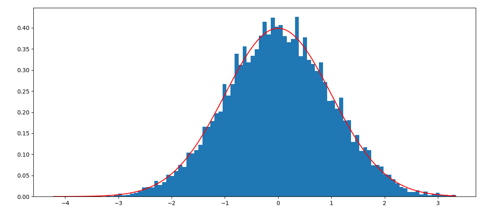

一种基于光滑逼近的正态分布采样法
一种基于光滑逼近正态分布的累积分布函数的采样法
逆变换采样
累积分布函数（CDF）是个单调函数，那么累积分布函数的反函数为，
证明，
这里有一个细节需要说明，由于$u$采样自均匀分布，因此容易知道$P(u \le y) = y$。这一点是以上推导的关键细节。对于很多分布来说，逆函数$F^{-1}(u)$并不容易计算，因此很多情况下无法直接使用逆变换采样。一个折中的思路是寻找$F(u)$的近似，
使得$G(u)$容易求逆。于是$G^{-1}(u)$近似服从目标分布，$G(u)$逼近$F(u)$的误差越小，采样越接近目标分布。
利用这个思路，这里分享一种最近想到的正态分布采样方法。
原理
根据论文Gaussian Error Linear Units (GELUs)中的结论，
于是有，
考虑到$\tanh(x)$的逆，
于是有，
根据逆变换采样原理，另$\Phi(x) = u \sim U[0, 1]$，求解一元三次方程，
获得的实根服从正态分布（近似）。接下来就是解一元三次方程的问题，化成$x^3 + px + q=0$的形式，于是有，
容易验证上式满足，
因此有实根，
其中$p$是固定值，
$q$的取值和$u \sim U[0, 1]$相关，
求得的$x$的取值服从正态分布（近似）。
此外，论文Gaussian Error Linear Units (GELUs)中还有近似，
不过该逼近的效果差于前者。
实现
Python实现如下（这里提供两种实现），
1 | import numpy as np |
正态分布检验，可以看到pvalue还是比较显著的，正态效果不易于Numpy自带的正态分布采样方法。
1 | NormaltestResult(statistic=0.9375257930807481, pvalue=0.6257759392078861) |
注意，这里正太检验使用的方法是Pearson方法，具体就是偏度系数和峰度系数测试正态性。
可视化结果，

总结
本文分享一种基于逆变换采样与函数光滑近似的正态分布采样方法。
转载请包括本文地址：https://allenwind.github.io/blog/14990
更多文章请参考：https://allenwind.github.io/blog/archives/